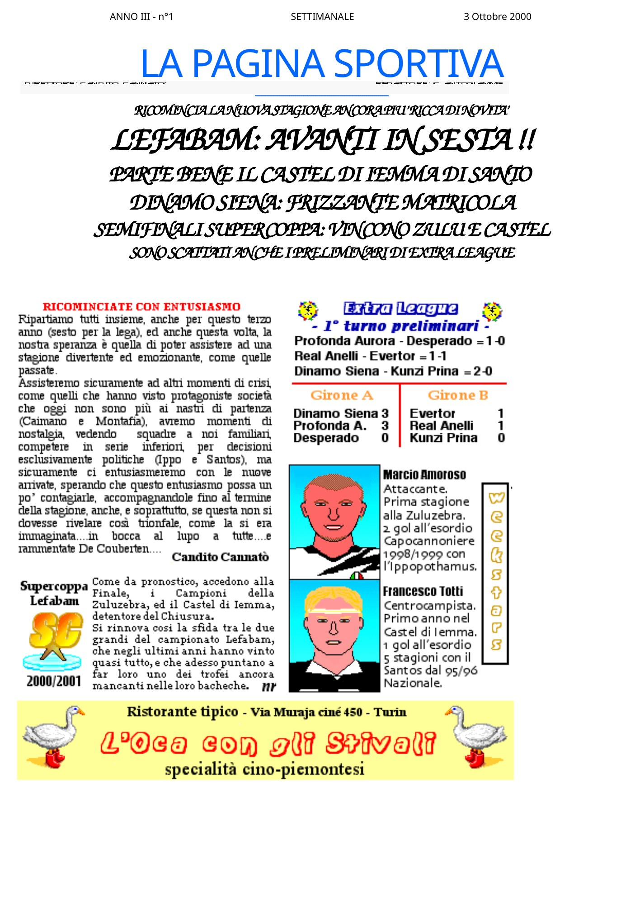

Anno III · Numero 1 · 3 ottobre 2000
La Pagina Sportiva · 2000/2001
LEFABAM: AVANTI IN SESTA!
Riproduzione integrale della scansione originale (1 pagina), senza visualizzatore PDF.

Gli altri numeri saranno aggiunti progressivamente, man mano che verranno digitalizzati.